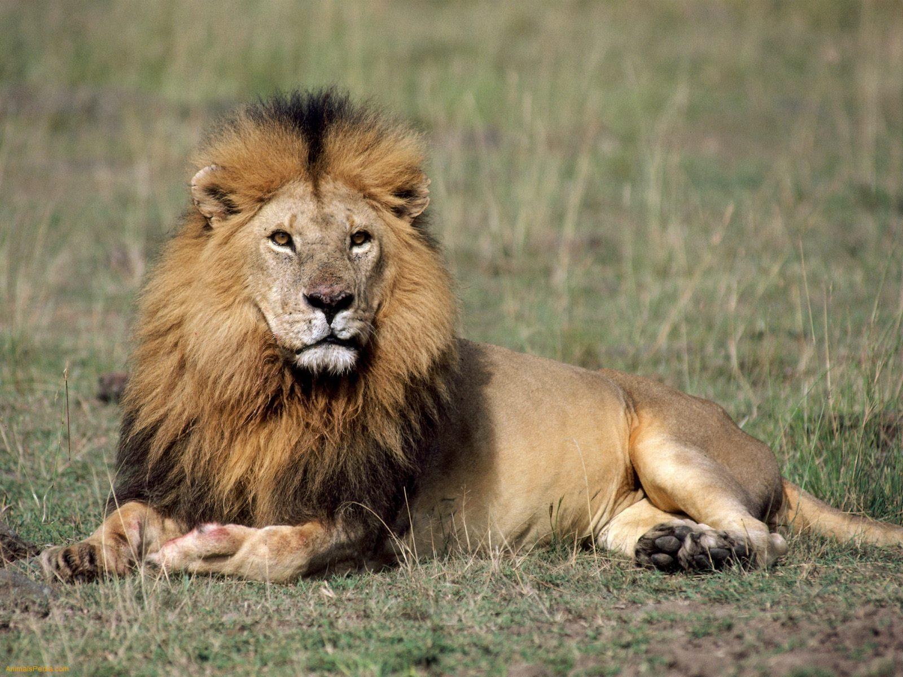

Zoo Animals
Bears
Bears live in different enviornments ranging from the cold North Pole, to the woods in Colorado.
Most of the bears are carnivores but Pandas eat bamboo, making them herbivores. Brother Bear is a movie
that depicts bears well. If you would like to know
more facts click the link Bear Facts
- Ollie - big bear who loves to eat salmon, and will be a proud dad soon!
- Mona - pregant with a cub, expecting a healthy baby in 4 months

Giraffes
Giraffes are herbivores eating the leaves of the acacia and mimosa trees. They travel in herds and have
long necks to eat the leaves high up where other animals can not eat, to survive in their environment. Madagascar the movie has a good representation of a giraffe.
If you would like to know more facts click the link Giraffe Facts
- Frankie - loves licking people who get too close to her
- Coconut - always trying to eat, never paying attention to anything
Lions
Lions are head of the food chain as shown in the movie Lion King where they are refered to as the "King of the Jungle".
Lions females are hunting for the pack and taking care of the cubs while the male protects and marks their territory.
If you would like to learn more facts click the link Lion Facts
- Mella - licking her paws and winning in a playful fight with Karl
- Karl - always lazing around, and basking in the sunlight

Monkeys
Monkeys are ancestors of humans, being primates and apart of that kingdom they eat bananas and are curious
of most things in the world if shown. Scientists run experimetns with monkeys often even sending one to the moon,
named Ham.
Good movies that depict them are Rise of the Planet of the Apes.
If you would like to more facts click the link Monkey Facts
- Cookie - loves to hit the glass in the encounter and mess with the children watching
- Earl - always napping and hanging from the trees
- Banana Pudding - loves playing with Cookie
Alligators
Alligators live in the Fresh Water lurking and waiting for food to come near them. They are strong animals
that are carnivores, many eat animals but the ones that live long enough may become in 13 ft in size and eat
other alligators. A good show that depicts them is Swamp People.
If you would like to know more facts click the link Alligator Facts
- Wren - has a bird on top of snout when sleeing in water
- Aspen - always under water chilling
- Mika - sunbathing with the heat as much as possible